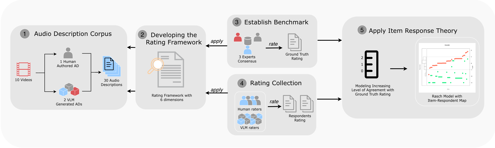
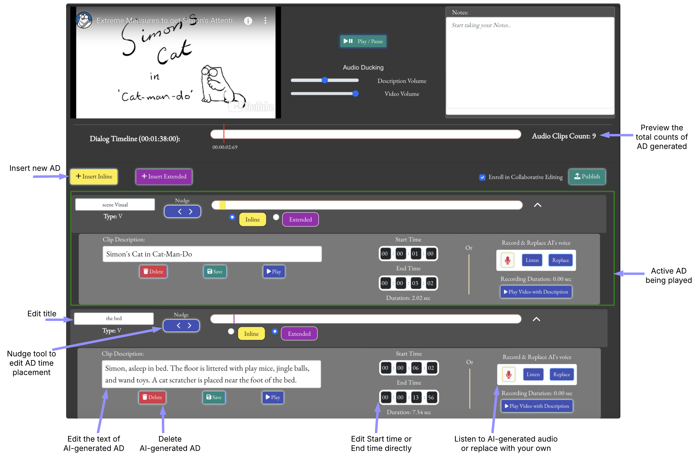
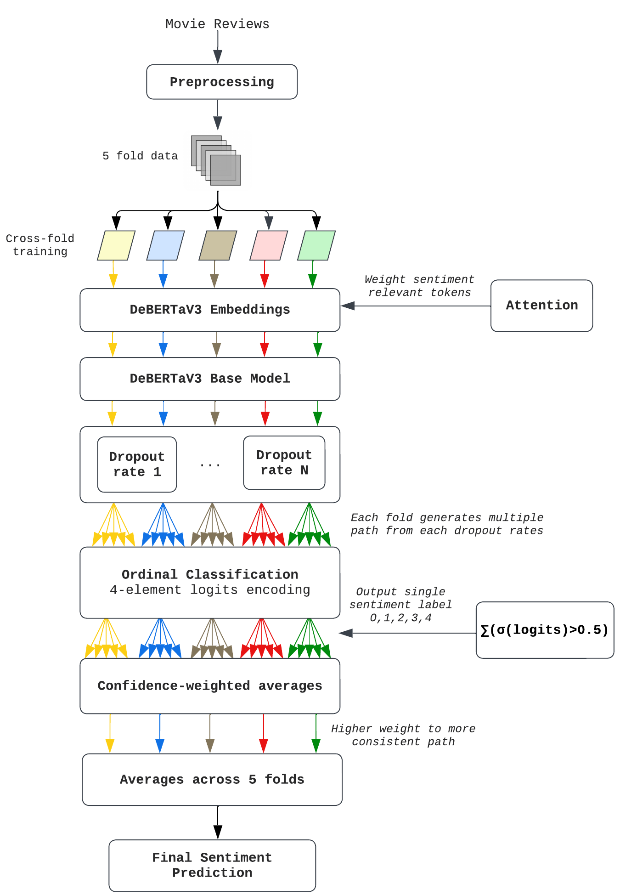
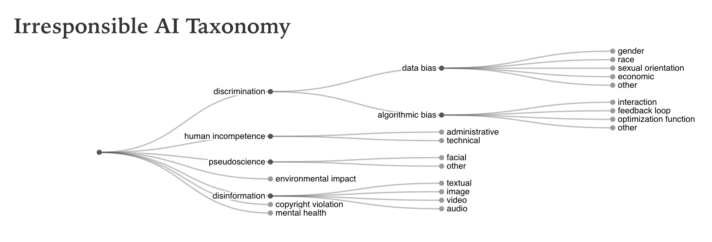
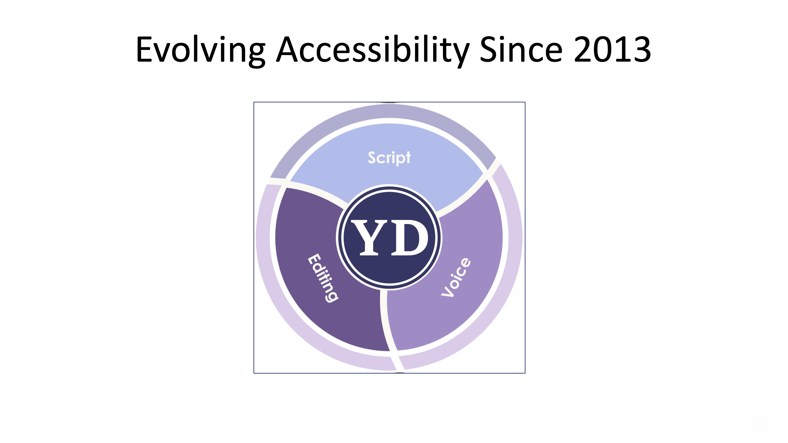
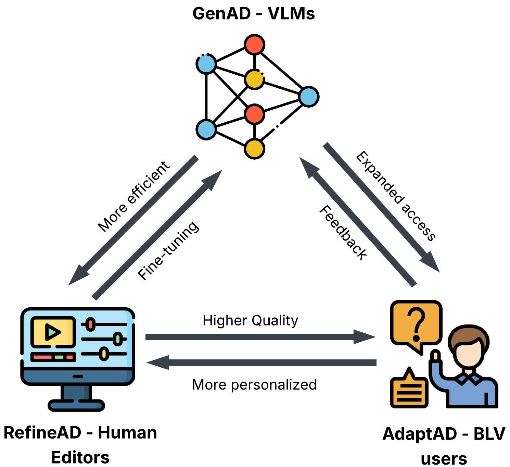
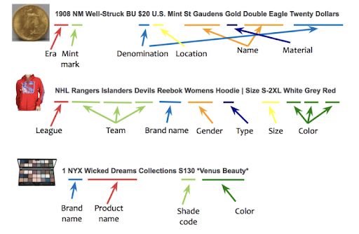

About
I'm a researcher at Northeastern's Khoury College of Computer Sciences, working on the YouDescribe project under Professor Ilmi Yoon. My work focuses on AI-assisted audio description for blind and low-vision users, spanning system development, user studies, and evaluation methodology.
I'm broadly interested in human-centered AI, accessibility, and how people and AI can collaborate on creative tasks.
Papers

Toward Scalable Audio Description Quality Control: A Workflow for Evaluating Human and VLM Raters



Posters & Presentations

Collaborative Innovation in Audio Description: Integrating Community, Education, and AI to Advance Accessible Media
NARRTC Conference, Virginia, April 2026

Projects & Competitions

eBay University Machine Learning Competition — 4th place
eBay 2025 University ML Competition, hosted on EvalAI